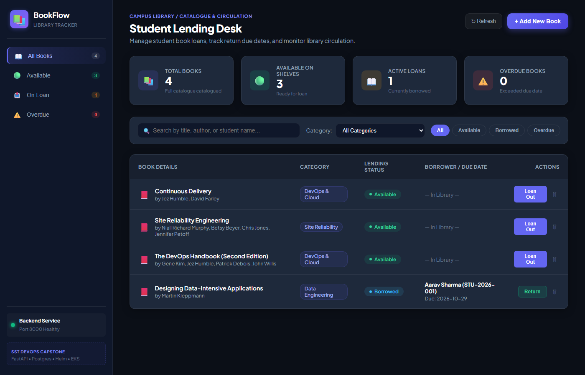
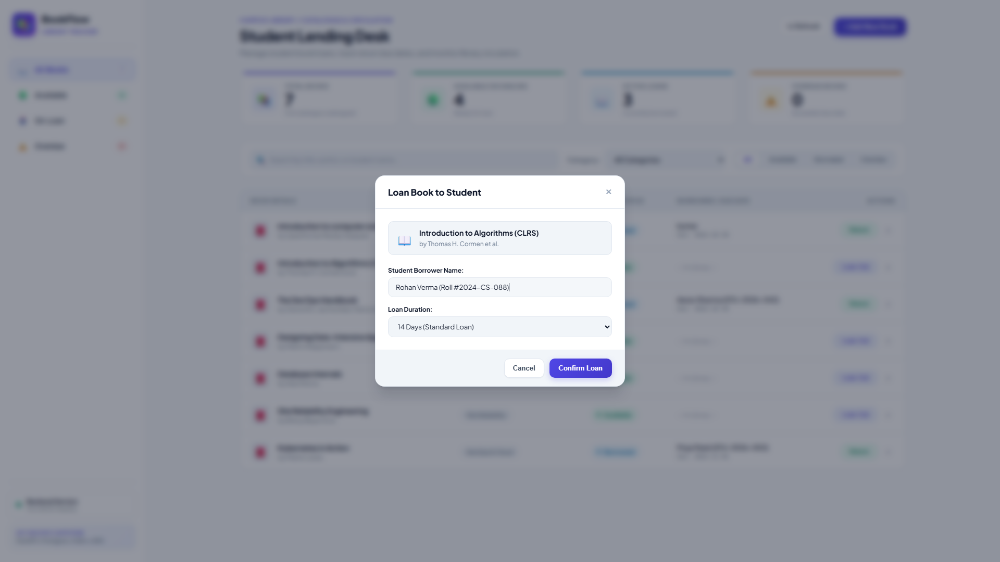
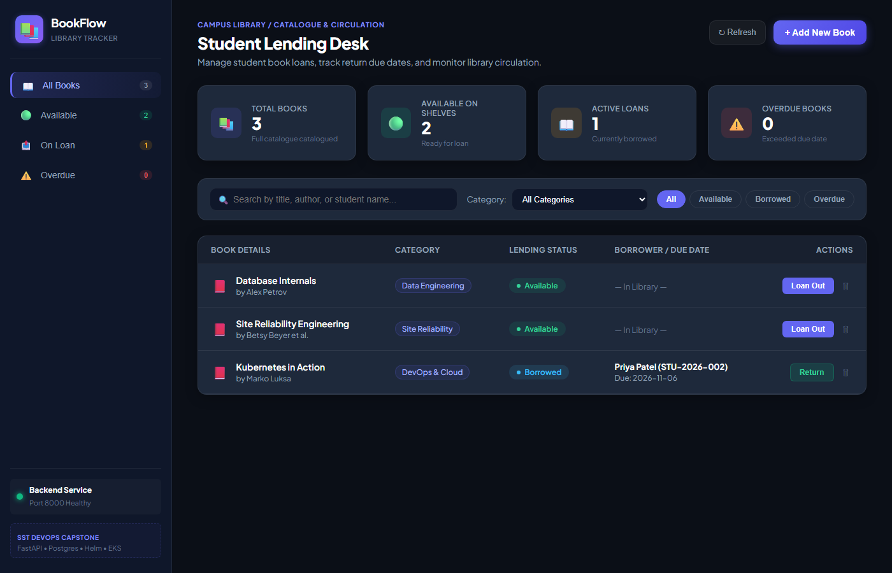
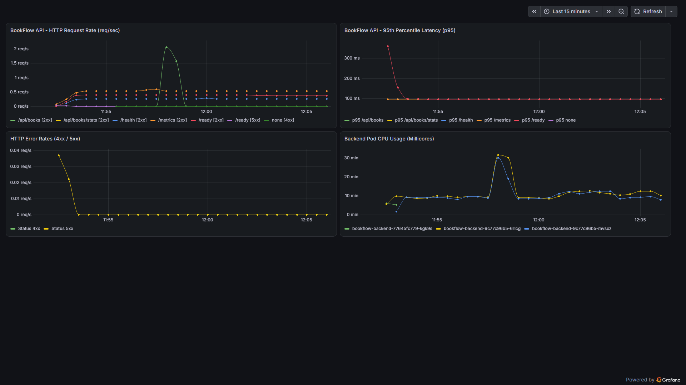

Production-grade cloud-native microservices platform featuring automated CI/CD pipelines, container security gates, declarative Kubernetes orchestration, and full-stack observability.
FastAPI, React 18, PostgreSQL 16 with non-root security.
GitHub Actions, 16/16 Pytest, Trivy CVE scanning, GHCR.
Helm chart, 2-replica HA, NGINX Ingress, Prometheus & Grafana.




Full Kubernetes deployment with 5/5 healthy pods (2 backend, 2 frontend, 1 Postgres), NGINX Ingress on port 8088, and persistent PostgreSQL storage surviving pod restarts.
Non-root container execution (UID 10001 / 101), automated pre-push secret audit passed with 0 leaked patterns, and modular Terraform IaC architected for high-availability cloud deployment.
GitHub Actions CI/CD gates every push with 16/16 Pytest tests, Aquasecurity Trivy vulnerability checks (0 CVEs), and publishes immutable SHA-tagged images to GitHub Container Registry.
Prometheus metrics scraping with target status UP, live 4-panel Grafana dashboard, HPA dynamic scaling, and 37 comprehensive evidence files indexed in evidence/INDEX.md.